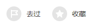

<div class="top_background"></div>


<div id="location">
  <h4>目的地>北京>景点</h4>
</div>


<div id="head_item">
  <div class="head_name">
    <span class="head_name_word">{{scenics?.title}}<br/>Summer place</span>
  </div>
  <div class="history">
    <a href="#"></a>
    <a href="#"></a>
  </div>
</div>

<div class="head_pic_bg">
  <div id="head_pic">
    <a></a>
    <a></a>
    <a></a>
    <!--<a href="#"></a>-->
    <!--<a href="#"></a>-->
    <!--<a href="#"></a>-->
  </div>
</div>


<div class="middle">
  <div class="introduce">
    <p class="introduce_word">
      {{(scenics?.account).substring(0,200)+'...'}}
    </p>
  </div>

<hr/>

  <div id="three">
    <div class="three_tel">
      <span>电话<br/>{{scenics?.telephone}}</span>
    </div>
    <div class="three_url">
      <span>网址<br/><a href="{{scenics?.web}}">{{scenics?.web}}</a></span>
    </div>
    <div class="three_time">
      <span>用时参考<br/>{{scenics?.usetime}}</span>
    </div>
  </div>
  <span class="middle_item">交通</span>
  <p class="middle_inner" [innerHTML]="scenics?.traffic">
    <!--到达西宫门：乘469、539路在颐和园西门站下；<br/>-->
    <!--到达北宫门：乘地铁4号线北宫门站D口出，或乘303、330、331、346、375、384、563、601、608、683、696、697、-->
    <!--718、特5、特10路在颐和园北宫门站下；<br/>-->
    <!--到达东宫门：乘地铁4号线西苑站C2口出，或乘209、330、331、332、346、394、601、608、626、683、690、696、-->
    <!--718路在颐和园站下；<br/>-->
    <!--到达新建宫门：74、374、437、952路在颐和园新建宫门站下 。<br/>-->
  </p>
  <span class="middle_item">门票</span>
  <p class="middle_inner" [innerHTML]="scenics?.ticket">
    <!--淡季（11月1日至次年3月31日）：<br/>-->
    <!--公园门票20元/人，学生及老人等半价优惠10元/人，联票50元/人；<br/>-->
    <!--旺季（4月1日至10月31日）：<br/>-->
    <!--公园门票30元/人，学生及老人等半价优惠15元/人，联票60元/人。<br/>-->
    <!--园中园需另购票：德和园5元/人，佛香阁10元/人，文昌院20元/人，苏州街澹宁堂10元/人；联票包括公园门票和园中园门票。<br/>-->
  </p>
  <span class="middle_item">开放时间</span>
  <p class="middle_inner" [innerHTML]="scenics?.opentime">
    <!--旺季 （4月1日至10月31日） ：<br/>-->
    <!--大门开放时间： 6:30 -&#45;&#45;18: 00<br/>-->
    <!--园中园开放时间： 8 :30-&#45;&#45;17 :00<br/>-->
    <!--静园时间为 20 : 00<br/>-->
    <!--淡季 （11月1日至次年3月31日）：<br/>-->
    <!--大门开放时间： 7 : 00-&#45;&#45;17 : 00<br/>-->
    <!--园中园开放时间： 9:00-&#45;&#45;16:00<br/>-->
    <!--静园时间为 19:00<br/>-->
  </p>
</div>
<hr/>

1
